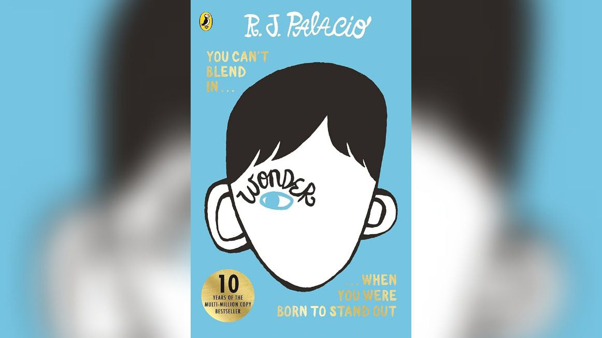
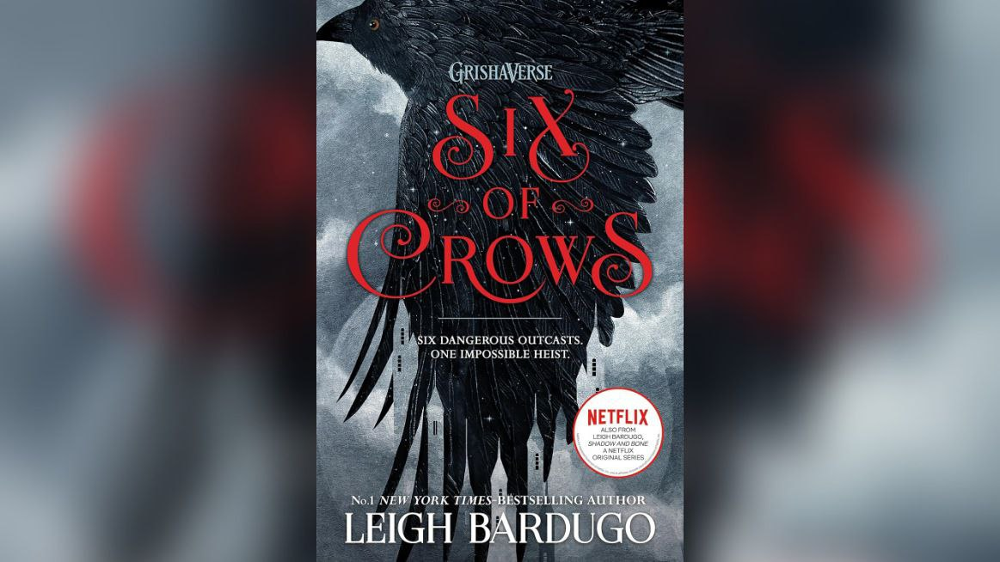
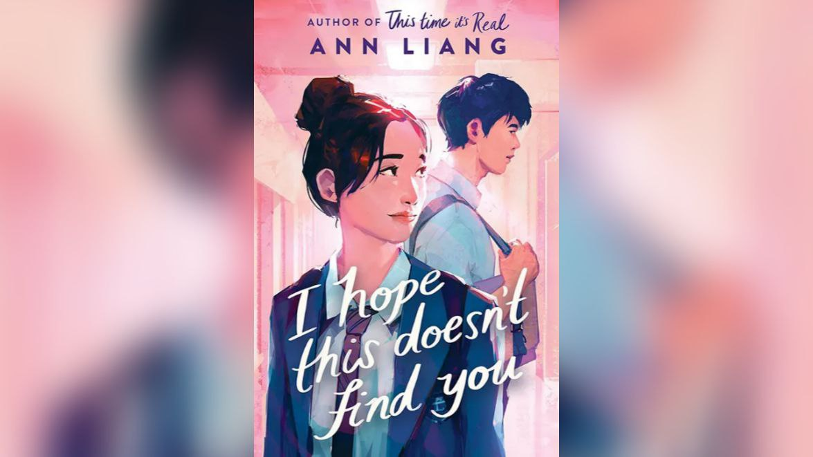

Books

Author: R.J Palacio
Author: R.J Palacio
My Thoughts: This is one of my all-time favourite books. The book is about a little boy who
has some a medical condition which makes it difficult for him to befriend other kids in his class. But slowly
he begins to encounter people who he can rely on. The story is very inspiring and I read it whenever I'm
feeling down and need motivation.

Author: Leigh Bardugo
Author: Leigh Bardugo
My Thoughts: Another favourite! This book is written in a fantasy setting. It is about 6 teenagers
who are all part of a crime ring. They decide to pull off a heist in a kingdom; if they succeed, they will be
unimaginably rich otherwise they could loose their lives. It is a thrilling tale about friendships and shared struggles.

Author: Ann Liang